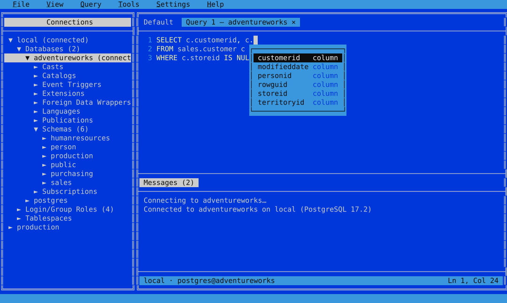

SQL editor and autocomplete
A modeless editor with conventional (CUA) keys, and autocomplete from the system catalogs. The same widget, read-only, shows definitions and the statement text in the dashboard and the profiler.
Moving
Arrows, Ctrl+Left / Ctrl+Right (word), End, PgUp / PgDn,
Ctrl+Home / Ctrl+End as usual. Home goes to the first non-blank character; pressed
again, to column 1. The gutter's line numbers are those of LINE n: in an
error.
Selecting
Shift with any movement key; Ctrl+A; mouse drag. Second keys for Ctrl+Shift+Home / Ctrl+Shift+End: Alt+Shift+Home / Alt+Shift+End. With a selection, F5 sends only the selected text and Tab indents its lines.
Editing
| Key | Action |
|---|---|
| Ctrl+Backspace / Ctrl+Delete | Delete the word left / right. |
| Ctrl+Y | Delete the line (as in Midnight Commander — not redo), or every line the selection touches. The clipboard is not changed. |
| Tab / Shift+Tab | Indent / unindent the line or the selected lines. |
| Ctrl+Z | Undo — every change made in the tab, including replace-all and inserted templates. |
| Ctrl+Shift+Z / Alt+Shift+Z | Redo. Many terminals send Ctrl+Shift+Z as Ctrl+Z: use Alt+Shift+Z. |
Indentation is a tab character, displayed 4 columns wide (editor.tab_width in
settings.toml); it is sent and saved as a tab.
Copy and paste
Ctrl+C / Ctrl+X / Ctrl+V, also Ctrl+Insert / Shift+Delete / Shift+Insert.
| Mechanism | Available | Used for |
|---|---|---|
| Internal buffer | Always | Copy and paste inside pgtc. |
| System clipboard | pgtc on the local machine (Windows, macOS, Linux with X11 or Wayland) | Copy and paste with other programs. |
| OSC 52 | Over SSH, in terminals that implement it (Windows Terminal, iTerm2, kitty, WezTerm, Alacritty, …) | Copy from a remote pgtc into the clipboard of the terminal's machine. |
- Copy writes to all that apply: the internal buffer, the system clipboard, and — in an SSH session or without a system clipboard — OSC 52.
- Paste reads the system clipboard; if there is none or it is empty, the internal buffer.
- Paste over SSH: use the terminal's own paste (Ctrl+Shift+V, right mouse button, …). Bracketed paste is enabled, so the text arrives as one insertion.
- The system clipboard and OSC 52 can each be disabled in Settings.
Find and replace

- Ctrl+F, then F3 for the next match and Shift+F3 (Alt+F3) for the previous one.
- Regular expression: Replace with may reference capture groups
as
$1,$2, …. - Matching is per line: a match never spans a line break.
- Replace asks at each match (Replace / All / Skip / Cancel); Replace all does not. Both can be undone.

Syntax highlighting
- pgtc's own lexer for PostgreSQL SQL and PL/pgSQL: keywords, string constants (also
E'…'and dollar-quoted), numbers, operators, quoted identifiers, comments. - A dollar-quoted string after
ASorDOis highlighted as code; any other as a string constant. - Lexical only: nothing is parsed or validated.
- Large scripts: only the visible lines are drawn and highlighted; a plain-format dump of hundreds of megabytes opens and scrolls without delay.
Autocomplete

sales.customer.Names are read from the catalogs through the query tab's own session. Available in connected query tabs and in the SQL boxes of developer template forms. It is a heuristic on the lexer, not a parser.
When the list opens
- By itself after a
.and after the third letter of a word, if there are candidates. - On Ctrl+Space or Alt+/ (for terminals that intercept Ctrl+Space).
- Never inside a string constant, a comment or a quoted identifier — but inside the dollar-quoted body of a
function or
DOblock.
What the list offers
The context is the statement around the cursor (between two ;):
| Before the cursor | Offered |
|---|---|
FROM, JOIN, UPDATE, INTO, TABLE, or a , in a FROM list | Schemas, and the tables, views, materialized views and foreign tables visible on the search_path |
schema. | The relations, functions and types of that schema |
alias. or table. of this statement's FROM / JOIN | The columns of that relation |
| anything else | Columns of this statement's relations; visible relations and functions; keywords |

sales.c.
co in the select list.- The typed prefix filters: case-insensitive, on the start of the name.
- Order: columns, relations, functions, schemas, types, keywords. An overloaded function is listed once.
- Write the
FROMclause first, and the select list can offer the columns.
Keys while the list is open
- Enter or Tab inserts; Esc closes; typing and Backspace refilter; any other key closes the list and acts as usual.
- Keywords are inserted in UPPER CASE; identifiers as stored, quoted by the rule of
quote_ident.
Where the names come from, and when they are read again
- Objects: one query, once per query tab, on first need —
pg_namespace;pg_class(tables, partitioned tables, views, materialized views, foreign tables, sequences);pg_proc(no window functions);pg_type(no array types, no row types of relations). - Visible is
pg_table_is_visible()/pg_function_is_visible()/pg_type_is_visible()when the names are read. AfterSET search_path, refresh the tree to read them again. - Columns: per relation on first use, from
pg_attributeinattnumorder. - The cache is dropped after the tab executes a
CREATE,ALTER,DROPorCOMMENT(by command tag) and on Refresh in the object tree. DDL of another session is not noticed. - No privilege checks: objects the role may not use are offered too.
pg_toast,pg_temp_nandpg_toast_temp_nare left out;pg_catalogobjects are offered.- While a statement executes or its result is paused no catalog query can be sent: the list offers cached names and keywords only.
Limits
Output columns of a subquery or a WITH query are not resolved. Inside a function or DO
body each statement is analysed on its own.